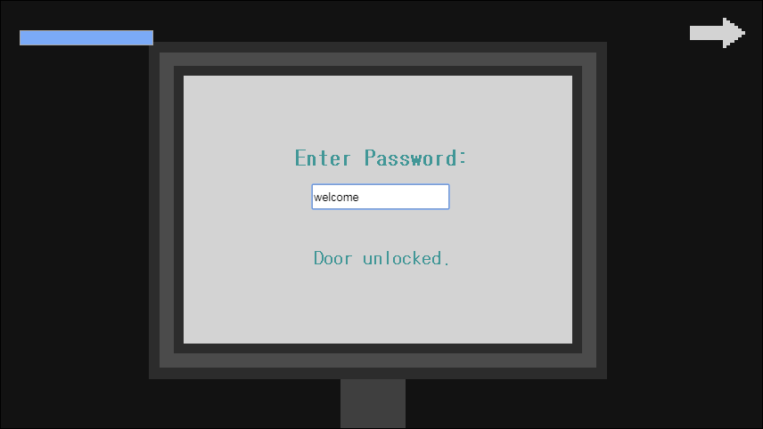
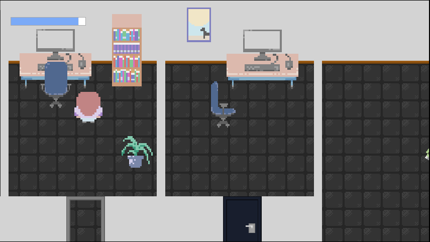
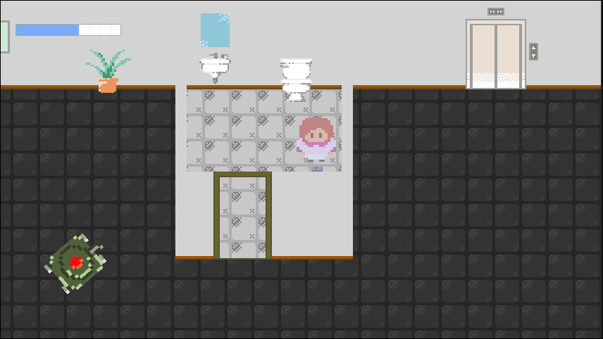
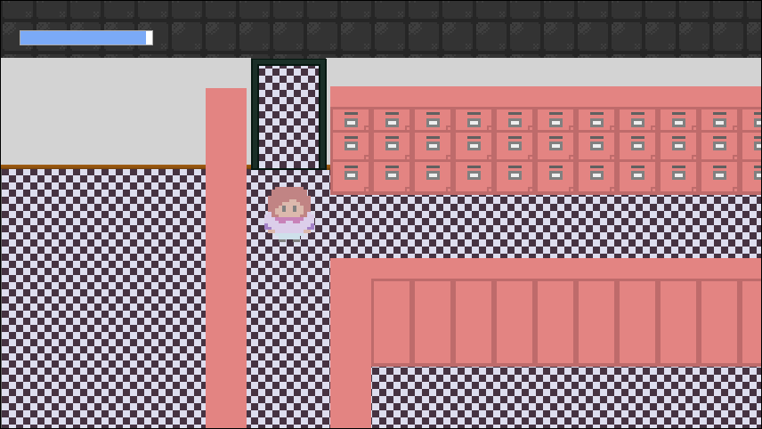
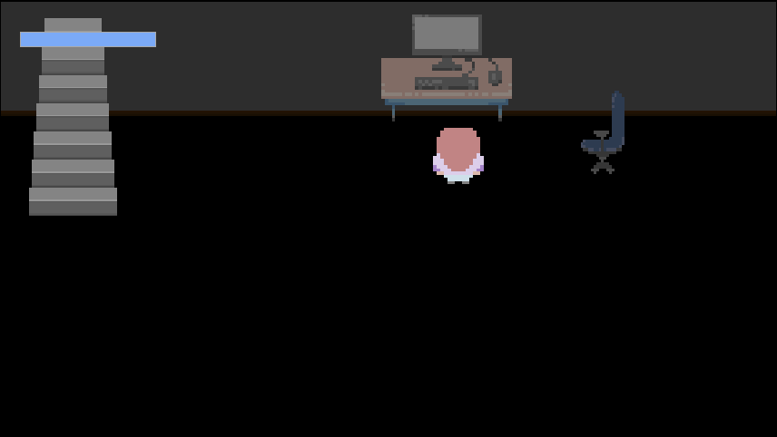

Move with W A S D
Press escape for a menu with clues
To read the clues in the menu, click on the black icon to the left of "Unknown"
You can interact with objects, some by pressing space and others by clicking on them
Solve the clues to unlock the doors and find the person who is texting you
Steps are hidden to prevent spoilers.
Click to reveal.

If you open the menu, the first text tells you the first password. On the first lower floor, stand near the computer and press space. Click on the text box and type 'welcome' to unlock the gray door.
Click to reveal.

Go to the second floor where the offices are. Now that you unlocked the gray door, you can interact with the computer in that office also by pressing space when standing near it. It shows a picture that is a clue for the next password. Go back to the lobby and type in 'sunshine' into the text box to unlock the blue door.
Click to reveal.

If you click on the third text you will learn you need a USB to interact with the third computer. The USB is located in the bathroom on the first floor to the right of the door. Now that the green door is unlocked and you have the USB, you can interact with the third computer to see the next clue. Now type 'doge' into the lobby computer to unlock the green door.
Click to reveal.

With the last door unlocked, you can go through the maze on the second lower floor. To navigate the maze go:
-down
-right
-down
-right
-down
-right
-up
You should see a staircase leading down. Stand on it to go down.
Click to reveal.

Stand near the computer and press space. Congrats, you beat the game!